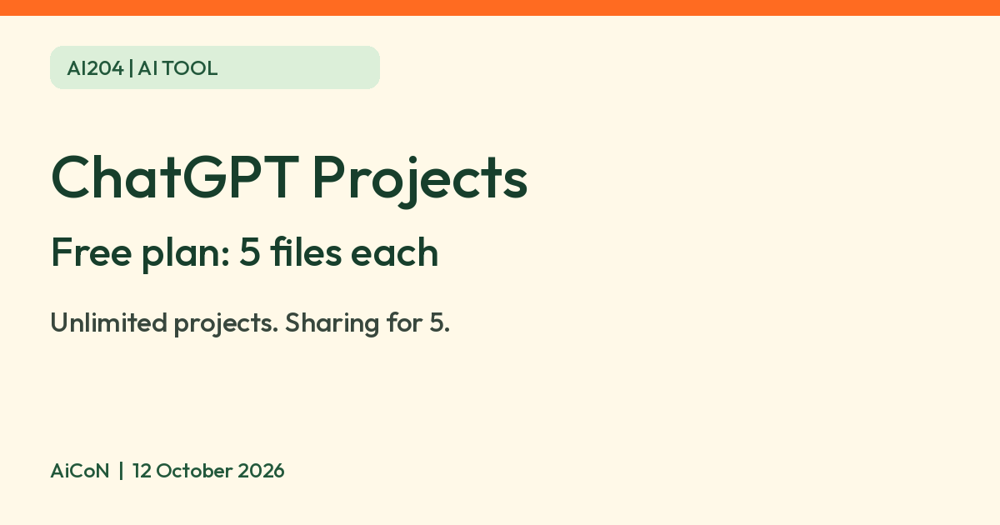

ChatGPT Projects on the Free plan: files, sharing, memory and privacy
OpenAI says Free users can create unlimited ChatGPT projects, with 5 files each and sharing with up to 5 people.

What it is
A project in ChatGPT keeps related chats, files and instructions in one place. OpenAI's help page says ChatGPT can use that context for ongoing work such as writing, research or planning, and that you can start on one device and continue on another. Examples OpenAI gives include a school project with class material, or a personal one to track vendors, budgets and timelines for an event.
Is it free?
Yes, with limits. OpenAI says ChatGPT is free to use, and its projects page says users can create an unlimited number of projects. Free accounts get 5 files per project (Go and Plus get 25, other plans 40). Only 10 files can be uploaded at one time. Paid plans may add tools such as agent mode and deep research.
What you can do
- Add files (PDFs, spreadsheets, docs, images) or pasted text, and project instructions that apply only inside that project.
- Move existing chats into a project, or save a good reply as a project source.
- Use the tools you already have in ChatGPT inside a project, such as Canvas, voice and web search, according to OpenAI.
- Share a project. OpenAI says sharing is available on Free, with up to 5 collaborators and 5 files. Invitees get chat or edit access. Members can view project chats and files, and download its files. Edit access also allows updating instructions, removing files and inviting others. Owners can also choose "Anyone with a link", but only logged-in ChatGPT users can join.
How to start
- Sign in to ChatGPT and select New project in the sidebar.
- Name the project and choose an icon and color.
- Add reference files or pasted text. On Free, stay within five files per project.
- Open the more options menu, then Project settings, to add instructions or choose memory settings. OpenAI says memory changes may take a few hours.
- If sharing, select Share, choose chat or edit access and review the members before inviting anyone. AiCoN advice: start with invite-only access for private material.
Memory and privacy
- OpenAI says a project can use default memory or project-only memory. Shared projects are set to project-only memory, cannot switch back to default and cannot see a member's other memories. Depending on plan and memory settings, default memory in a private project can draw on conversations outside it.
- For personal accounts, OpenAI says shared project data may be used to improve models only when the owner and every contributor have "Improve the model for everyone" turned on. For Free, Plus and Pro, it may use information from projects to train models if that setting is on. AiCoN advice: check that setting before you put personal documents in a project.
- Deleting a project removes its chats, instructions and project-only files. OpenAI says they are removed from its systems within 30 days unless it must keep them for legal or security reasons. Files saved separately in Library are not deleted.
India
India is on OpenAI's ChatGPT supported countries list. The projects page does not mention any India-specific limit. We did not test it from India.
Limits to know
- Study mode and scheduled study hours do not apply to project chats, per OpenAI.
- OpenAI says the Free default model and limits can change over time, and ads may appear on the Free tier in some countries.
- Five files per project is a small allowance for big source material.
Frequently asked questions
How many projects can a Free user make?
OpenAI says an unlimited number.
How many files can I add on Free?
5 per project, per OpenAI.
Can I share a project on Free?
Yes. OpenAI lists Free with up to 5 collaborators.
What changed since this post?
Three official OpenAI help pages rechecked 12 October 2026. Confirmed unlimited projects, Free file and collaborator caps, logged-in link access, shared project-only memory, deletion and training conditions, study-mode limits and India on the supported list. Added creation steps and explicit shared-file visibility. Free model and tool limits can change. No ChatGPT project, sharing, privacy or India in-product test was performed.
Sources: Projects in ChatGPT, ChatGPT Free Tier FAQ, ChatGPT supported countries. Checked 12 October 2026.